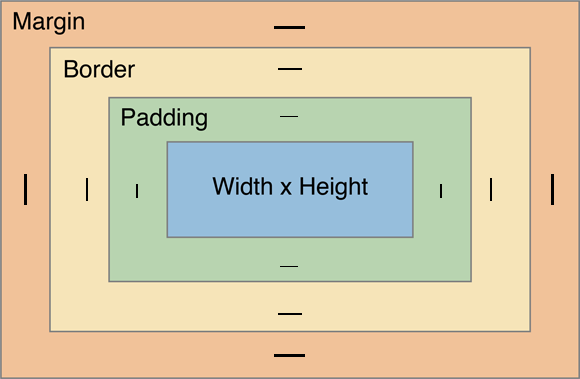
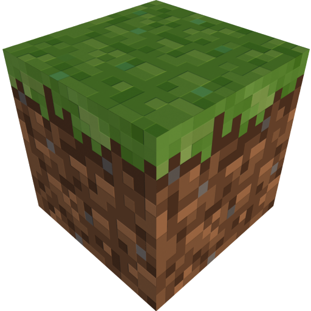

Marcio Dias
 github.com/marciosalinodias
github.com/marciosalinodias
HTML tentou, mas não foi...
O CSS foi criado para resolver um grande problema
HTML foi criado para exibir conteúdo, dados. Não para decorar!
No HTML 3.2 foram incluídas tags de estilização, um exemplo é a tag <font>.
Cada vez ficava mais complicado o desenvolvimento de páginas web.
W3C entrou no jogo e deu um basta: Criou o CSS.
Permitiu: Desacoplamento, reutilização de código e organização, ou seja, "economizou" muito trabalho.
¡¡¡Prioridade!!!
Oooouuuuu
!important
Sobrescreve a definição de CSS forçadamente, ou seja, use apenas:
Caso a hierarquia de cascata não se aplique.
Caso a tenha que sobrescrever uma definição de um plugin (Bootstrap).
Nunca se estiver fazendo um plugin.
Nunca para o site inteiro.
{ Seletores - Básicos }
{ Seletores - Combinators }
{ Seletores - Pseudo-Classes (pt.1) }
{ Seletores - Pseudo-Elements }
{ Seletores - Attributes }
Os browsers exibem as cores no padrão RGB (Red, Green, Blue)

Você pode definir as cores por:
Nome:
red ,
green ,
blue
Código Hexa (#RGB - #RRGGBB):
#FF0000 ,
#00FF00 ,
#0000FF
Os valores hexadecimais são:
preto - 0123456789ABCDEF - branco
RGB: rgb(255, 0, 0) , rgb(0, 255, 0) , rgb(0, 0, 255)
Os valores rgb são: preto - 0/255 - branco
Para poder colocar estilo você precisa entender os objetos:
Cada valor adiciona no tamanho do elemento:
Margin - 10px
Border - 5px
Padding - 5px
Width - 100px X Height - 50px
O tamanho real em tela é: 120 X 70px
Nota: também existe mais um elemento que só aparece quando é utilizado: { Outline } ( a "borda da borda" )
Como os objetos se organizam na tela?

block
Todo e qualquer elemento inicia em uma nova linha, alinhado a esquerda.
inline
O elemento segue o fluxo de exibição de tela.

Como os elementos se posicionam?
Segue o fluxo de exibição, ignorando as propriedades top/left/right/bottom.
Respeita as propriedades top/left/right/bottom referente ao elemento pai.
Respeita propriedades top/left/right/bottom referente a página.
Respeita propriedades top/left/right/bottom referente ao elemento posicionado mais próximo.
Nota: também existe o posicionamento por camadas feito através da propriedade { Z-Index }
Define o comportamento caso os elementos internos ultrapassem os limites do elemento pai.
visible
Continua...
Sugestões?! Dúvidas?!

Marcio Dias
 github.com/marciosalinodias
github.com/marciosalinodias
 marciosalinodias@gmail.com
marciosalinodias@gmail.com
 marcio.dias@aplub.com.br
marcio.dias@aplub.com.br
Muito obrigado!
 Impress.js
Impress.js